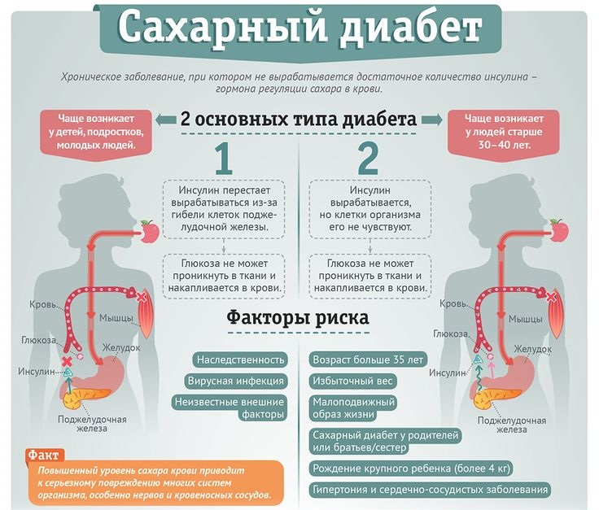

Сахарный диабет
Что такое сахарный диабет?
Диабет– это хроническое заболевание, которое возникает либо в случаях,
когда поджелудочная железа не вырабатывает достаточное количество
инсулина, либо когда организм не может эффективно использовать
вырабатываемый инсулин.
Симптомы и признаки сахарного диабета?
- Аномальная жажда и сухость во рту
- Учащенное мочеиспускание
- Ночное недержание мочи
- Нехватка энергии и крайняя усталость
- Постоянное чувство голода
- Внезапная потеря веса
- Расплывчатость зрения
Типы сахарного диабета?
- Диабет 1-го типа
- Диабет 2-го типа
- Гестационный диабет
Диабет 1-го типa:
Диабет 1-го типа - это аутоиммунное заболевание. Оно возникает, когда
иммунная система разрушает клетки поджелудочной железы, вырабатывающие
инсулин more.
Диабет 2-го типа:
Вкратце диабет 2-го типа - это заболевание углеводного обмена, которое
по-простому также называют «возрастным диабетом». С одной стороны, гормон
инсулин уже не работает в достаточной мере (инсулинорезистентность), а с
другой - при диабете 2-го типа поджелудочная железа выделяет слишком мало
инсулина. В результате уровень сахара в кровиclick hier.

Гестационный диабет:
Диабет беременных (гестационный диабет) - это повышение уровня глюкозы в
крови, впервые возникшее во время беременности, но не дотягивающее до
уровня, достаточного для постановки диагноза «сахарный диабет». Это
скрытые нарушения углеводного обмена, угрожающие перерасти в сахарный
диабет.
Статистика